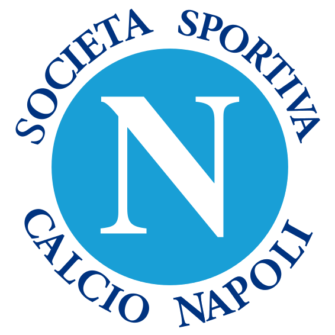

Historia
Fundado en 1926, el Napoli es uno de los clubes más importantes del sur de Italia. Alcanzó su época dorada en los años 80 con Diego Maradona.

Estadio
El Napoli juega en el Estadio Diego Armando Maradona, uno de los recintos más emblemáticos del fútbol italiano.

Jugadores actuales
El Napoli mezcla talento joven con jugadores experimentados, manteniéndose competitivo en la Serie A y torneos europeos.
Títulos Ganados

Serie A
3

Coppa Italia
6

Supercopa de Italia
2

Europa League
1

Mejor jugador de su historia
Diego Armando Maradona es la máxima leyenda del Napoli. Lideró al club a sus primeros títulos de Serie A y dejó un legado eterno en la ciudad.

Logro Único
El Napoli logró conquistar la Serie A 2022-23 tras más de 30 años, marcando el regreso del club a la cima del fútbol italiano.